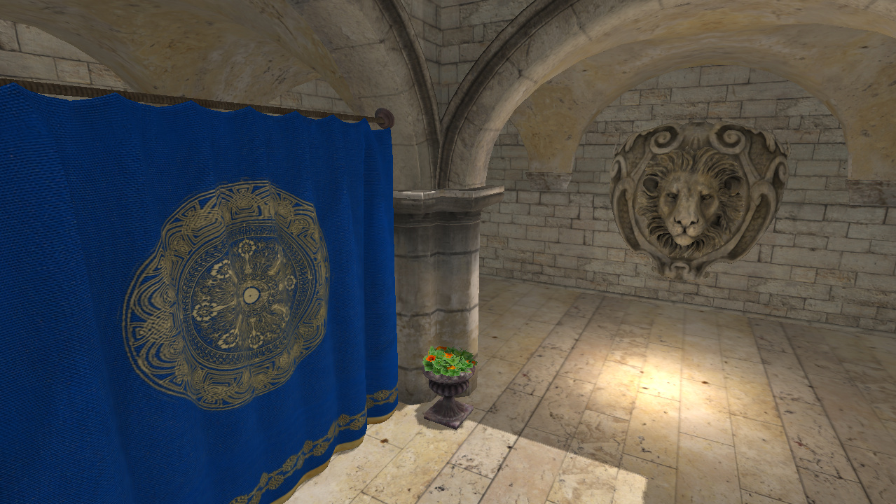
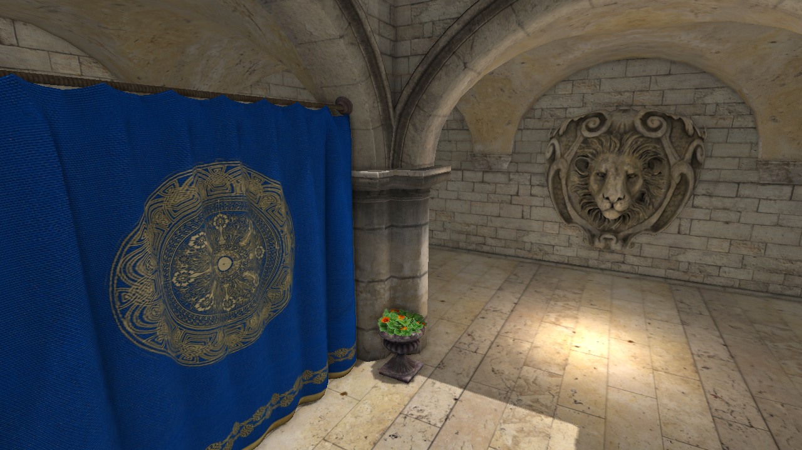
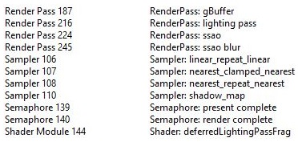

Progression
Description
Progression is a 3D game engine written in C++ for Linux and Windows. It originally started out as an simple OpenGL renderer for class projects, but it now features a Vulkan renderer, Lua scripting, skeletal animation, asset serialization, and more. It is my largest project to date, even though I keep rewriting it as I learn more and gain more experience with C++ and graphics.
Code
Code from this project can be found on Github here
Features
Note: for SSAO, deferred rendering, shadow mapping, and normal mapping I partnered up with Zach Chavis for them as part of a project
Screen Space Ambient Occlusion (SSAO)
We took the approach described in this tutorial. This method randomly samples many nearby points for each pixel, and return which fraction of those samples were occluded by other nearby geometry. This can be seen in the following image:

Two example of the SSAO hemisphere for two points. Image from the tutorial above.
To sample random points within this hemisphere surrounding each pixel, we need to use random offsets. Since it would be impractical to generate or store random offsets for each possible orientation of the hemisphere, we instead create a "kernel", which is a buffer of random offsets in the tangent space. These offsets are scaled so that most of them are closer to the center:
const float numSamples = 32;
std::vector< glm::vec4 > kernel( numSamples );
for ( int i = 0; i < (int) numSamples; ++i )
{
glm::vec3 sample( randomFloat() * 2 - 1, randomFloat() * 2 - 1, randomFloat() );
sample = randomFloat() * glm::normalize( sample );
float scale = lerp( 0.1, 1.0, ( i / numSamples ) * ( i / numSamples );
kernel[i] = glm::vec4( scale * sample, 0 );
}
We also do not want every single point to have the example same random samples, since this might cause some structure or artifacts in the final image, and require us to use more samples to get rid of these issues. To accomplish this, the hemisphere is randomly rotated before sampling. No rotation matrix is actually used, but instead random tangent vectors are calculated. Again it would be a lot more memory to store a tangent for every pixel, so we only create a 4x4 texture of tangents, and repeat them across the image:
std::vector< glm::vec4 > noise( 16 );
for ( int i = 0; i < 16; ++i )
{
noise[i] = glm::vec4( randomFloat() * 2 - 1, randomFloat() * 2 - 1, 0, 0 );
}
After uploading the kernel and tangent texture, the actual SSAO shader needs to be run. First we need to do Gramm-Schmidt to generate the orthonormal basis:
vec3 randomVec = texture( ssaoNoise, noiseUV ).xyz;
vec3 T = normalize( randomVec - N * dot( N, randomVec ) );
vec3 B = cross( N, T );
mat3 TBN = mat3( T, B, N );
One interesting note here is that N is in view space, and to my understanding the tutorial we followed chose z = 0 for the random vectors so that the random vector would never be parallel to N. If they were paralle, then T would be normalizing the vector ( 0, 0, 0 ) and our basis would be defficient. View space vectors can have z <= 0 though, so I don't understand how we can guarantee an orthonormal basis here, or why view space is advantageous. It looks fine though, so we didn't change anything with it. The next step is actually sample the points, and add up how many of them are occluded by the actual saved geometry:
float SCALE_RADIUS = 0.5;
float occlusion = 0;
for ( int i = 0; i < 32; ++i )
{
vec3 offsetPos = fragPos + TBN * uboSSAOKernel.samples[i].xyz * SCALE_RADIUS;
vec4 projCoords = matrices.P * vec4( offsetPos, 1 );
projCoords.xyz /= projCoords.w;
projCoords.xy = 0.5 * projCoords.xy + vec2( 0.5 );
projCoords.y = 1 - projCoords.y; // since current Vulkan viewport is inverted
float offsetDepth = ( matrices.V * texture( worldPositions, projCoords.xy ) ).z;
float rangeCheck = smoothstep(0.0f, 1.0f, SCALE_RADIUS / abs(fragPos.z - offsetDepth));
occlusion += (offsetDepth >= offsetPos.z + BIAS ? 1.0f : 0.0f) * rangeCheck;
}
Another point of interest here is the "rangeCheck". An object that is occluding another won't really affect the amount of ambient light that point should receive the further away the occluder gets. As a result we want to diminish the effect of those objects. Without it you would see a dark halo surrounding the edges of every object that occludes another one. If we look at the result now however we see some problems:
The current ambient occlusion texture. The repeated pattern of the 4x4 noise texture is clearly visible.
To fix this is pretty easy, and we just run a blur filter of this image to produce the new ambient occlusion texture and then in the final lighting calculations:

The ambient occlusion texture.
 Sponza without SSAO (top) and Sponza with SSAO (bottom).
Deferred Rendering
While I had written a tiled-deferred renderer in OpenGL, current Vulkan renderer is just regular deferred rendering without even light volumes currently. Tiled deferred or F+ is on the docket. Only just started trying to consider the GBuffer size and reduce it, but the current GBuffer looks like this:
- Positions: RGBA32_FLOAT
- Normals: RGBA8_UNORM (compressed using 24-bit octahedron encoding)
- Diffuse and Specular Colors: RGBA16_UINT (upper 8 bits of RGB are diffuse color, lower 8 are specular, and the alpha component is the 16 bit specular exponent)
- Ambient Occlusion: R8_UNORM
- Depth: 32 bit
While positions and normals do not need the alpha channel, my GPUs do not support RGB textures with optimal tiling. Initially normals were RGBA32_FLOAT, the diffuse and specular were RGBA_UNORM and RGBA16_FLOAT respectively. With each change to the gbuffer we saw the following timings:

Sponza timings with 4 lights in 1080p on my RTX 2080. Yes, the SSAO pass is very unoptimized currently.
I am currently trying to figure out if 16 bit positions are okay, and play around with what I could put in the alpha channel instead of it being unused. I also want to try getting rid of the position buffer altogether and just recover it via the depth buffer.
Directional Light Shadow Mapping
Normal Mapping
The VBO stores the normals and tangents, but not the bitangents since those are calculated in the shader. The TBN matrix which transforms vectors from tangents space to world space is calculated with the following pseudocode:
vec3 worldT = normalize( modelMatrix * inTangent );
vec3 worldN = normalize( inverse( transpose( modelMatrix ) ) * inNormal );
vec3 worldB = cross( worldN, worldT );
TBN = mat3( worldT, worldB, worldN );
All the blogs and tutorials we saw online multiply both the tangent and normal by just the model matrix, but we are pretty sure that since the normal does not lie on the geometry surface, just multiplying by the model matrix would skew the result for non-uniform scaling. The tangent and bitangent lie along the surface though and do not need the inverse transpose. We then just look up the normal map value, normalize to [-1, 1] and apply the matrix:
vec3 n = texture( normalMap, texCoord );
n = normalize( n * 2 - 1 );
n = normalize( TBN * n );
GPU Profiling
I had wanted to implement a simple system for timing Vulkan commands for a while. I finally got around to doing it when I started considering different GBuffer formats and packings, since that was the only detailed way to tell how each change was impacting performance. The system I implemented uses the built in "vkCmdWriteTimestamp". The user can insert timestamps into the command buffer and mark them with an name as well. By default the timings won't be printed out unless the user manually looks them up. The default is to wait until the application is exiting to print out all of the averages for the timestamps that start with the same prefix, such as "Frame_Start" and "Frame_End". An example usage of this in my main draw function is shown below:
cmdBuf.BeginRecording();
PG_PROFILE_RESET( cmdBuf );
PG_PROFILE_TIMESTAMP( cmdBuf, "Frame_Start" );
ShadowPass( scene, cmdBuf );
GBufferPass( scene, cmdBuf );
SSAOPass( scene, cmdBuf );
DeferredLightingPass( scene, cmdBuf );
PostProcessPass( scene, cmdBuf, swapChainImageIndex );
PG_PROFILE_TIMESTAMP( cmdBuf, "Frame_End" );
PG_PROFILE_GET_RESULTS();

Output from a normal run of Sponza in my engine
The reason everything is a macro is because in my engine I have multiple build configurations. The slowest is "Debug" and the fastest is "Ship". In the Ship build, I want everything to be as fast as possible, so I turn off logging, profiling, resource naming, etc. Macros provide an easy way for me to disable the functions entirely for specific builds, ensuring no performance hit.
RenderDoc Integration
A small feature in my engine that has helped me debug a lot faster was giving resources and regions names that are visible in RenderDoc captures as seen below:
How the regions and draw commands used to look (left), and after the new feature (right)

How the resource inspector used to look (left), and after the new feature (right)
This was a small feature, but it already has saved me lots of time being able to find the exact resources and draw calls I am interested in. Names and regions are registered using the VK_EXT_debug_marker extension. In my graphics api that sits ontop of vulkan, each resource has an optional last parameter during its creation to specify the name. Just like the GPU profiler, the API for naming is a series of macros. This is so that in Ship builds these names disappear for max performance.
Videos
A short demo highlighting some of the more recent rendering features
Special Thanks
I want to give a special thanks to Moses Adeagbo for inspiring me to start this in the first place and helping me a lot with OpenGL in the beginning. Stephen Guy for putting in way more time than he had to as a professor helping me understand many of these concepts. Zach Chavis for being the only person at the UMN that wanted to partner up with me to do cool graphics in Vulkan when we did the first round of SSAO, deferred rendering, normal mapping, and directional shadow mapping.
External Libraries Used
- Vulkan
- EnTT
- Sol2
- Lua
- Assimp
- stb_image
- GLFW
- LZ4
- SPIRV-Reflect
- GLM
- rapidjson
- meshoptimizer
- cpptoml
- MemoryMapped by Stephan Brumme